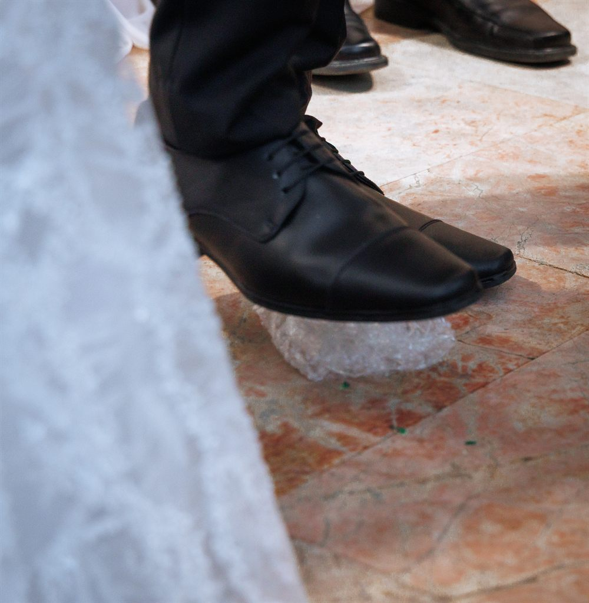

פנייה ראשונית
משתפים בתאריך ובמיקום המתוכננים ובודקים אפשרות לתיאום.
יום החתונה הוא רגע של חיבור והתחלה. כאן אפשר להכיר, לשאול ולברר על עריכת חופה עם הרב שלמה גרנית.
לבירור מועד לחופה
משתפים בתאריך ובמיקום המתוכננים ובודקים אפשרות לתיאום.
מבררים את פרטי הליווי ואת השאלות שחשובות לכם לקראת החופה.
מתאמים מראש את הפרטים הנדרשים ואת המשך ההכנה לפי ההנחיות שיימסרו.
עריכת החופה בהתאם לתיאום ולאישור שניתנו מראש.
השלבים הם מסגרת כללית לתיאום. היקף הליווי והמועד כפופים לבירור ולאישור אישי.
כמה פרטים שיעזרו
להתחיל את השיחה.
כדאי להכין תאריך ומקום, גם אם הם עדיין משוערים, ולפנות לבירור אישי. פנייה או שיחה ראשונית אינן אישור הזמנה או שמירת תאריך.
את היקף הליווי, ההכנה והמפגשים יש לברר ישירות עם הרב. השלבים המוצגים כאן הם מסגרת כללית לתיאום ולא התחייבות לחבילת שירות.
מידע מלא ועזרה על הרישום כלול בתהליך.
לשיעור, לחופה או לשאלה אישית. מתחילים בהיכרות.
טלפון: 052-710-2016 · מייל: shagranit@gmail.com